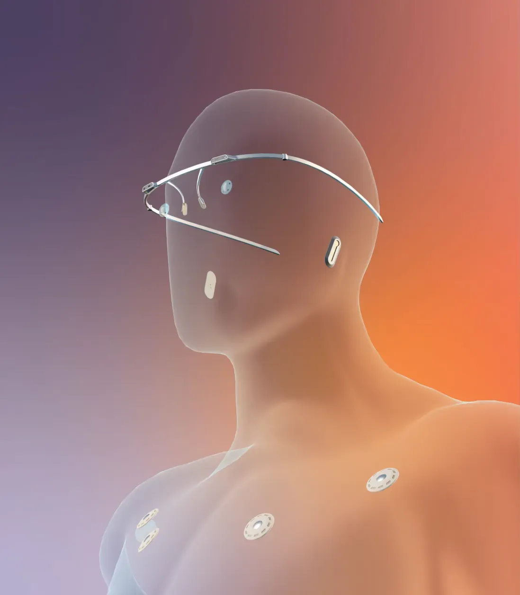
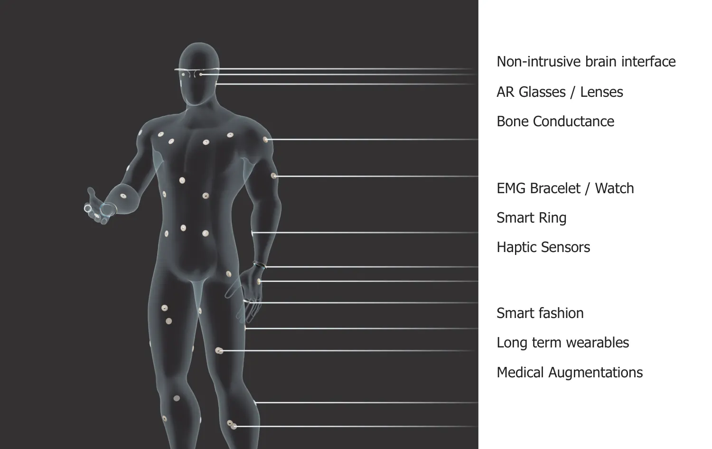
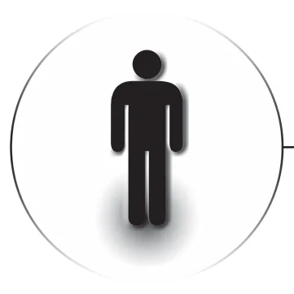
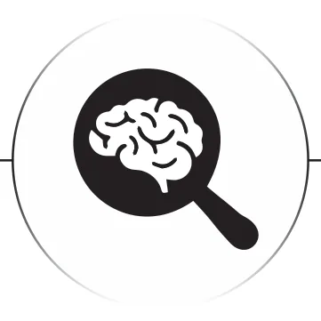
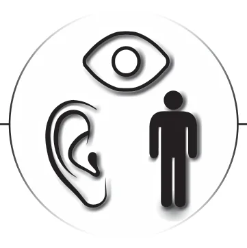
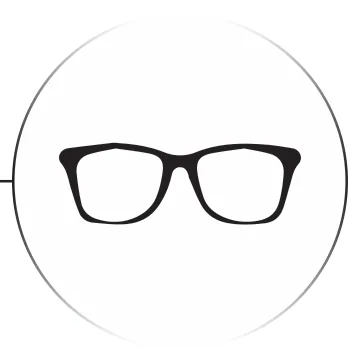
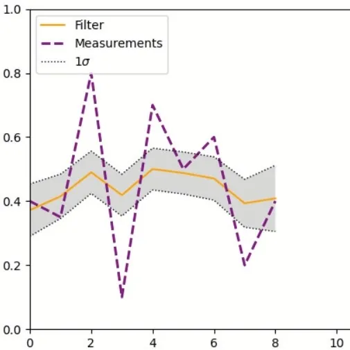
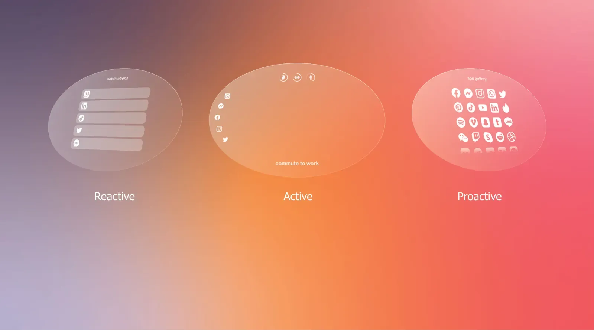
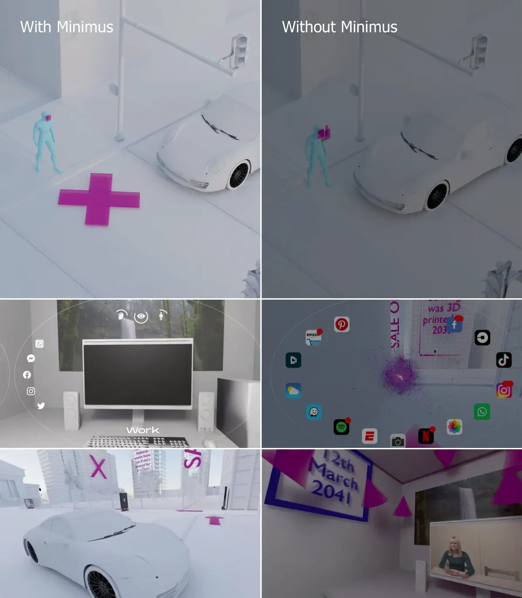
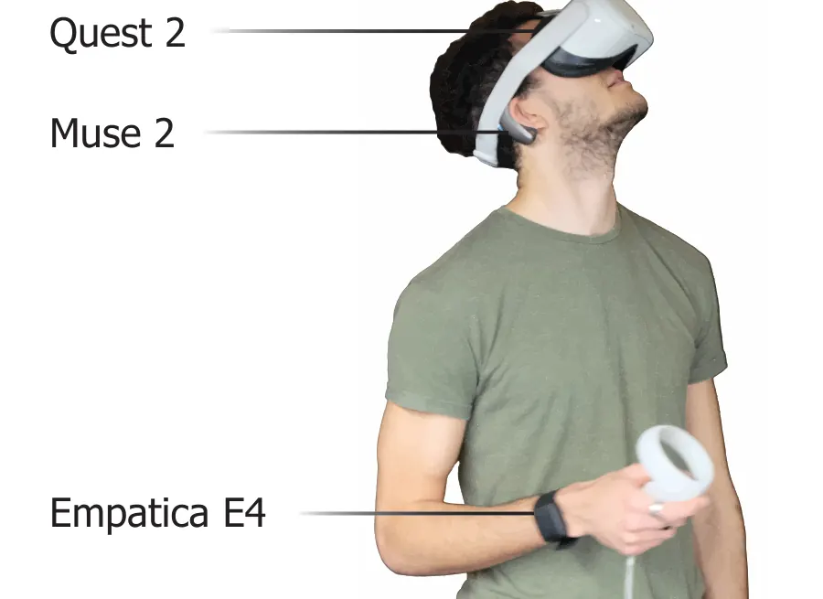

Speculative Design2021–22
Minimus
Future design for 2041
How might we improve quality of life in urban environments by augmenting the human's ability to manage information overload?

Minimus is an Operating System Add-on that integrates with all user augmentations to seamlessly minimise information overload.
For many people, the current state of media delivery results in feeling overwhelmed and powerless, often leading to anxiety, fatigue, and paralysis of action. In the long term, it can result in poorer decision-making ability and speed, lower levels of analytical thinking, poorer semantic memory (memory of facts), and higher stress levels. This is on track to get worse in the near future as technology plays an increasingly prominent role in our daily lives.
The system makes deep inferences about the user's intent and selects relevant information through advanced methods of filtering, optimising, batching and queuing.
To visualise the system, I created a set of VR videos along with normal videos to put you in the shoes of Human 4.0.

Meet Human 4.0
In the development of our solution, it was paramount to understand what the average person in 2041 would resemble. To achieve this we hypothesized about the consumer augmentations available in 2041, which would be mainly enabled by the technology in labs now and following Moore's law of miniaturisation. The augmentations are mainly either psychological, physical or social.
Simplified Overload Management System
-

Metamodel of the user
After Minimus activates there is a 1 week lag period that forms a training set of data and builds the initial metamodel of the user, to prevent highly incorrect user intent prediction.
-

User intent prediction
The metamodel of the user is combined with instantaneous internal and environmental data in a Kalman filter to predict user intent in real time.
-

Data prioritisation
The incoming environmental data is prioritised by optimisation towards the user's intent. This controls the data by importance before further enhancement to prevent overload by control via quantity and delivery (which sense is targeted).
-

Low friction AR interface
The user interacts with the system via an AR interface that would be embedded into glasses or contact lenses.

Kalman filtering
To begin testing the system, I implemented a Kalman filtering prototype using calendar data and reported emotions to measure user intent. This gave probabilities for how likely the user is to attend future events, providing data that could then be used in models to assess the importance of related information.
Low Friction AR Interface
The widespread adoption of AR glasses and lenses in 2041 will enable users to experience the digital and real world simultaneously. The future of Human-Computer Interaction will rely on ultra-low-friction interfaces that allow users to safely and efficiently interact with the digital world while staying present in their real-world environment.
The minimus interface is divided in three virtual windows. All icons are displayed in white to avoid distractions with saturated spots of colour. The positioning of the screens leverages a user's spatial awareness, with a middle, left and right screen.

VR Immersion Testing
In order to test minimus in managing information overload, I built virtual VR environments that moved the user through stories with and without the effects of minimus. These took place in different scenarios: walking through a city, and trying to work in a house.
I then tested people in this environment using a Quest 2 headset whilst measuring their brain signals using the Muse 2 consumer EEG headset and the Empatica E4 biometric monitoring watch. These experiments showed promising preliminary results when looking at delta, theta, gamma and beta waves in the EEG and heart rate and skin temperature on the E4: the minimus system significantly reduced information overload and cognitive stress.

